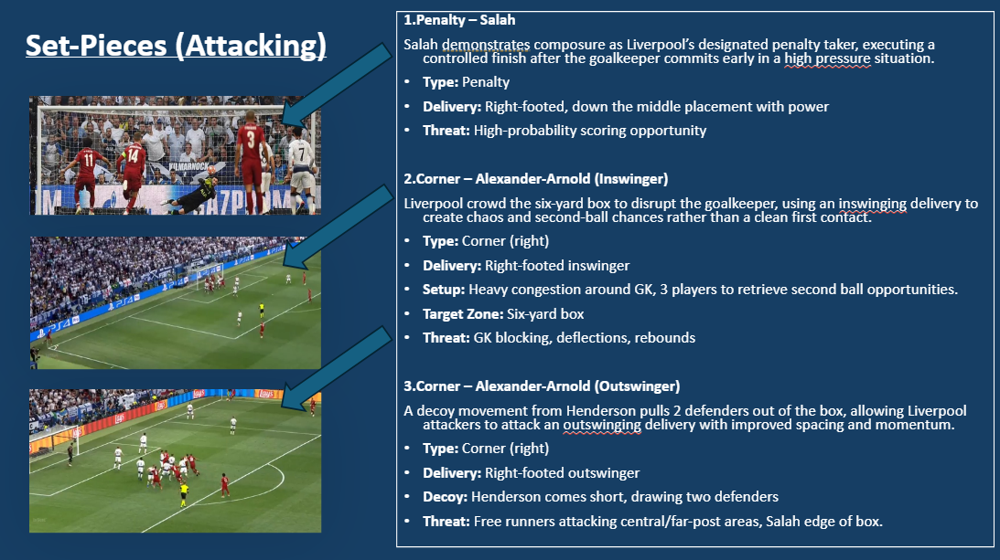

Liverpool Opposition Report
Pre-match opposition scouting report | Scout: Cal Botterill

Pre-match opposition scouting report on Liverpool, covering tactical structure, game-management patterns and key areas for preparation.
